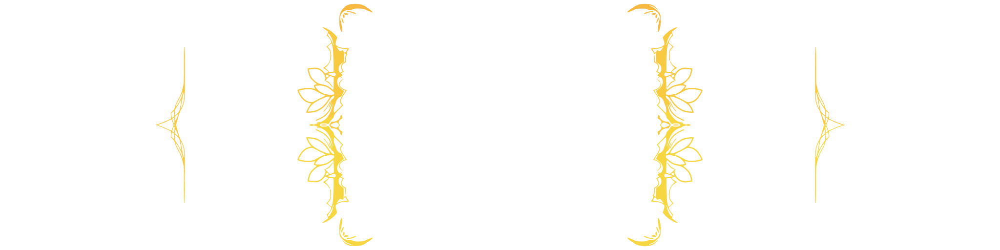

SENEK
CERI

Senek Ceri is one of two clones of the late Ceri, bearing a portion of the Creation of Life. He was granted the power to affect organic matter such that it can be tied very deeply to a spirit, creating highly magical souls. However, his creations lack the refinement of his brother, Olruc's. Thus, his creations are chaotic and generally regarded as hideous. He was framed by Olruc for atrocities and the other deities didn't hesitate to cast him out of the mortal plane.
The moment Olruc saw Senek's first attempt at creating life, he was perturbed by its asymmetry. But perhaps what infuriated Olruc most was that Senek loved the "ugly" creations. Olruc worked tirelessly on a plan to cast Senek into the underworld from then on, and he did one day execute the plan, and it succeeded. Senek was trapped in the bowels of ceriad for hundreds of years, during which time he focused on making the ugliest yet most powerful creations he could conjure. This ultimately lead to the construction of a race known in the overworld as "Verminkind", a name that Senek gladly receives; After all, his goal is to disgust Olruc in every way possible, so when he defeats his brother it will be that much more humiliating.